Helping Parents to Protect Children from the Smog in China
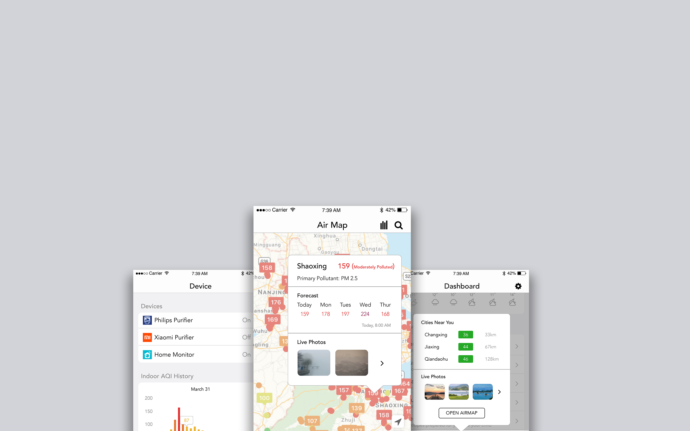Product Design
Designer
Individual Work
In China, the smog has become a serious issue that threatens children's health conditions, who are more susceptible to smog than adults. In addition, there is no protection methods for children under 13. On smog days, children need specially designed masks or air cleaners to escape the bad air. On extreme days, kids cannot even go out to parks, facilities, or schools.
Children in China Do NOT Get the Right Protection in Smog
AirC is an app that helps parents protect their children more efficiently in smog. At the same time, the app can connect with other smart devices such as air purifiers, air monitors, etc. Specifically, I designed four main features - the dashboard, an air map, an online forum, and a device management page.
Screens of Mobile and Watch Interface
To understand my design challenge and the problems children and their parents are facing in China, I kicked off my research on looking into what is already out there and understanding what children and parents really need on smog days.
I chose four applications which have functions related to haze weather for competitor analysis and studies: Amazon, Air Matters, Xiachufang, and Baidu Forum. Air Matters is a weather app which focuses on haze, and Xiachufang is a cooking app which provide some special recipes for haze weather.
Amazon 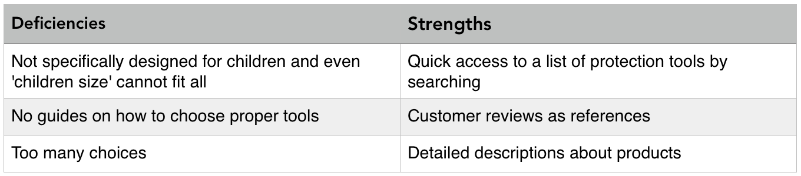
Xiachufang 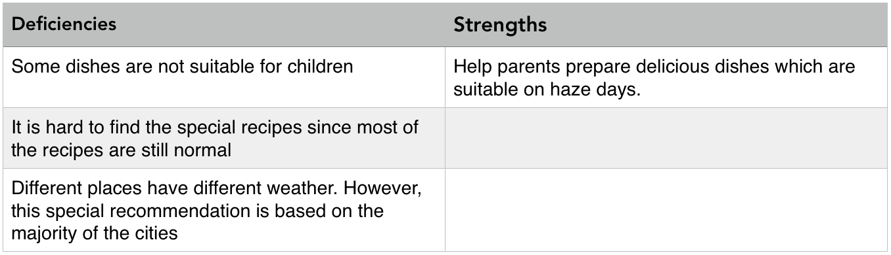
Air Matters 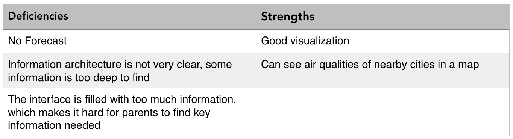
Baidu Forum 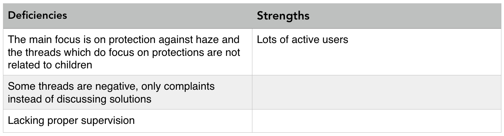
There are three primary stakeholders: parents (primary persona), children (secondary persona), and people who are not in smog area but care about smog issues (anti persona).
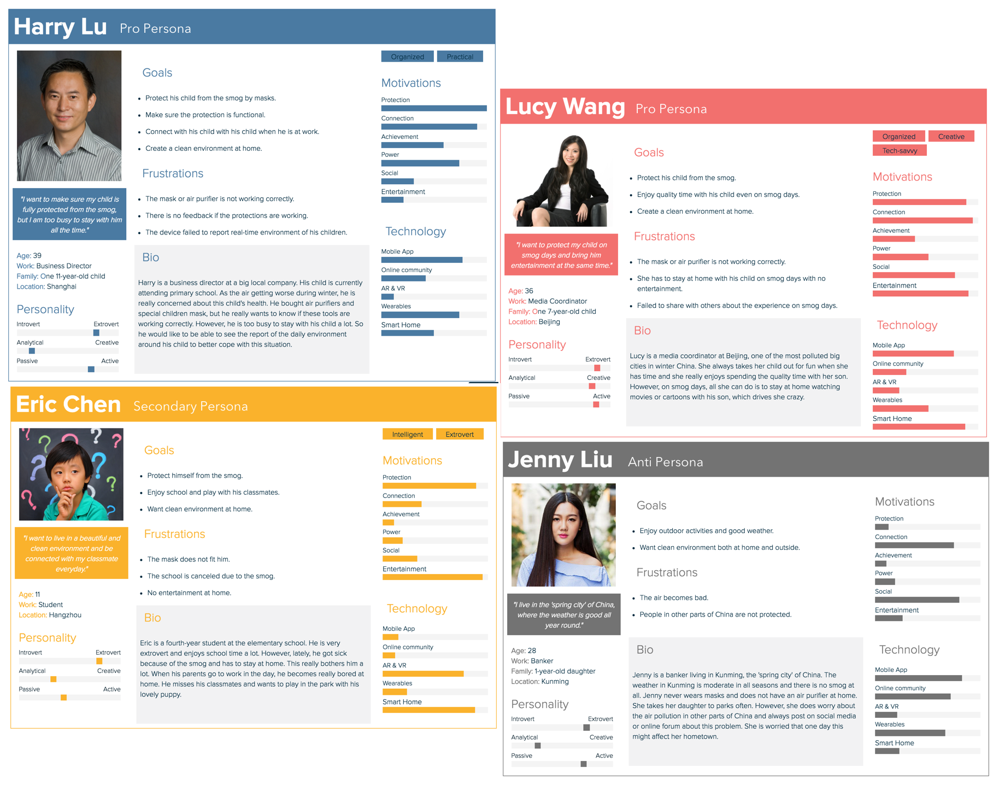Based on the research insights, I started the design by sketching out different solutions, ranging from a mobile app to pervasive interactions such as smart mask. I came up with 8 approaches to help parents keep their children safe and entertained on smog days.
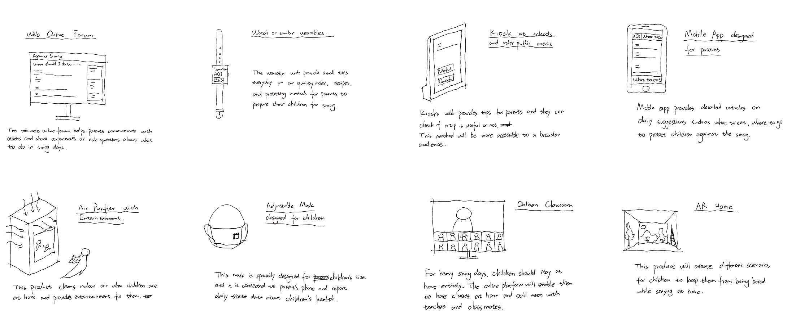Eight Approaches to the Challenge
To help me narrow down to one best solution, I tried to discover the stories of the primary persona of a busy father who wants to protect his child from the smog and at the same time keep the kid from being bored. I set up five stories settings and mapped them together to gain more insights:
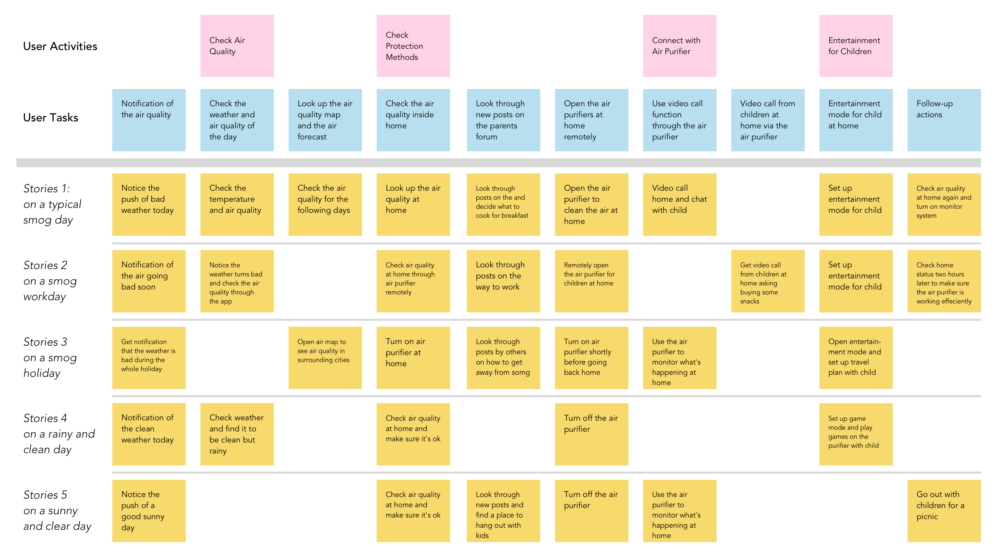Story Mapping: User Activities and Tasks in Different Settings
After the story mapping, I concluded the four most important functions that should be addressed in the solution. I used the QOC (Questions, Options, Criteria) method to analysis the different solutions.
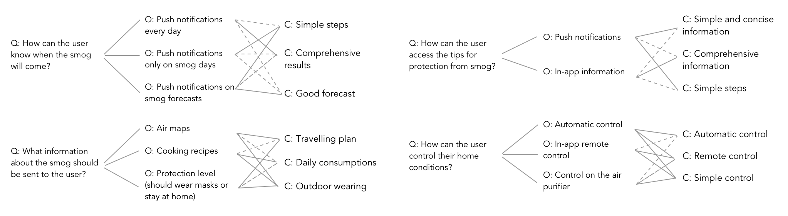
Design Rationale
(solid line is for the criteria, dot line is against the criteria)
After the design rationale, I decided to go with a mobile app with the functionalities of comprehensive forecast, online forum, and remote control over smart home equipments.
The first iteration is rapid prototyping on paper. I sketched a mobile app interface with five tabs: dashbaord, forum, add post, air map, device.
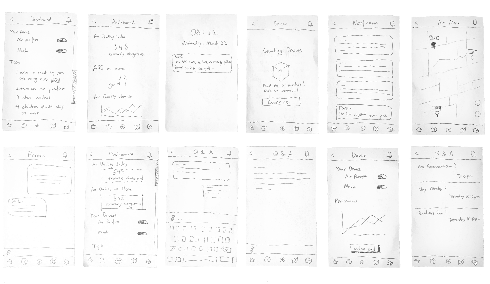Then I tested with two users with the paper prototype and here is the takeaways from the test:
I created a whole set of hi-fidelity mock-ups following the iOS 10 design guidelines.
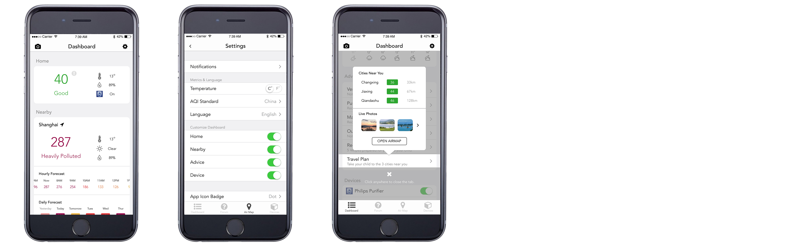Dashboard
Another design highlight is the Air Map function where users can get a comprehensive and intuitive view of the air conditions nearby as well as across China.
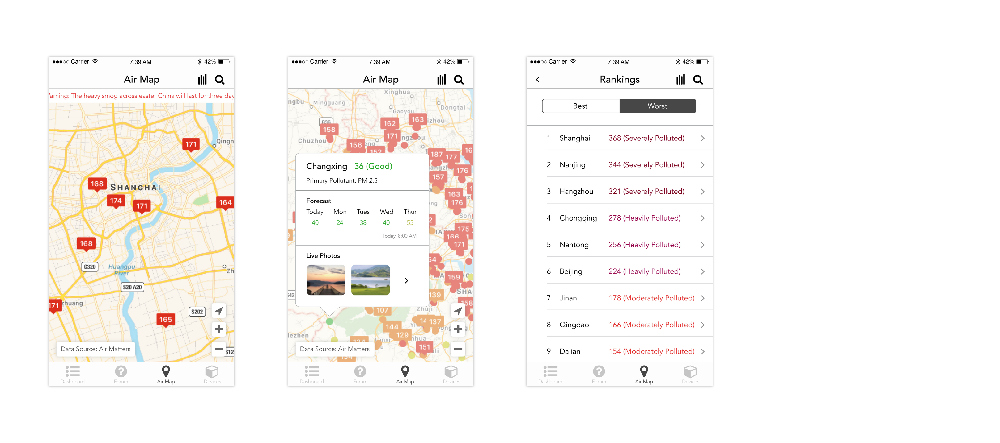Air Map
To help parents get notifications and forecast more easily and control connected devices remotely, I designed the smartwatch mini-app which supports the basic but essential functions.
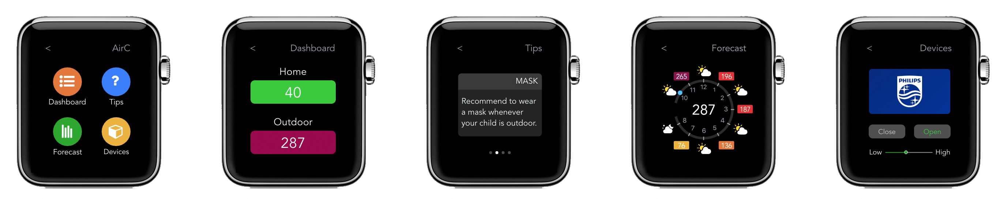I created a working prototype in InVision to demonstrate the functionalities and design of interactions. Here are two snapshots of the dashboard and forum interactions.
Parents can view current air quality, air forecast, and tips to prepare for their children. They can also control connected devices on the dashboard.
Parents can ask questions on how to protect in smog. There will be professionals as well as other parents active on the forum, which forms a social group.
The impact AirC aims to make is to inform parents the AQI and provide solutions to protect children more effectively. Currently, most parents in China do not know what to do in polluted days and some of their actions to protect their kids are useless or even wrong.
In addition to providing solutions, I hope that AirC will also help users know the seriousness of air pollution and inform them to act actively to protect our living environment!